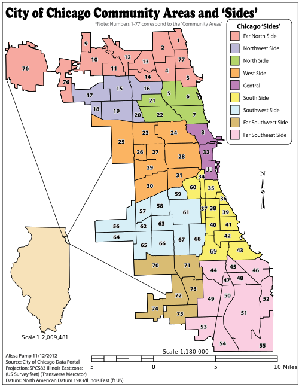

This is an interactive scatterplot to look at social determinants of health alongside various health outcomes in Chicago's 77 community areas. You can put any variables on the X and Y axes to look at their relationship by clicking
x or
y next to the variables you want in the list below. The size of the bubbles indicates a third variable, which you can change by clicking
size. Mouse over the bubbles for more information and to identify which community area a bubble represents. By default, this scatterplot shows how
Infant Mortality increases in community areas that score highly on the
Hardship Index, and the size of a bubble is proportional to the
Population of that community area. You can also see summary statistics of these variables to the right.
It's important to remember that this scatterplot shows relationships but not causal effects. Just because two variables show a clear trend does not mean that one causes the other: both could be caused by a third, hidden factor. We also recognize that it is difficult to draw broad conclusions about the health of Chicago's citizens by looking only at its 77 community areas, which represent vastly different populations and demographics. No community can be fully represented by a bubble on a graph. Even so, this tool can point us toward the right questions to investigate further.
The color of the bubbles represent the nine "Sides" of Chicago, as seen in the map to the right. You can click a Side in the legend to highlight community areas.
All data is provided by the Epidemiology and Public Health Informatics Unit at the Chicago Department of Public Health. The map of the community areas is by Alissapump and licensed under CC BY-SA 3.0 via
Wikimedia Commons. As a disclaimer, this tool is still in development and is only intended for internal planning purposes. It is not an official City of Chicago application. All code is open-source and the visualization is by
Jonathan Giuffrida, based on
this scatterplot by Michael Barry.
Version 1.1: November 2015
{kind=link}
{kind=link}